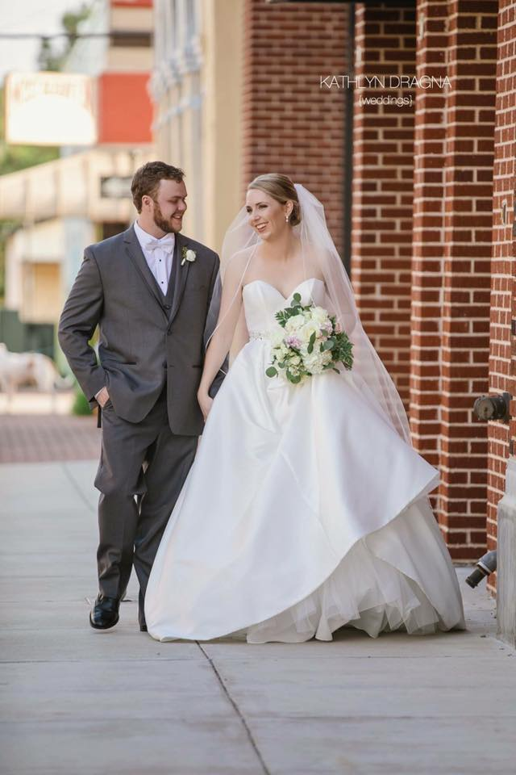

Life after the 90's

Getting married and stuff
- After graduating high school I attended USC to study filmmaking before transfering to Oregon State University to pursue and English degree (why?).
- A few years later I moved to Houston, TX to teach high school English.
- Just before the end of my first year teaching I met my husband, Levi. We have been married since March of 2017 and are parents to an elderly cat.